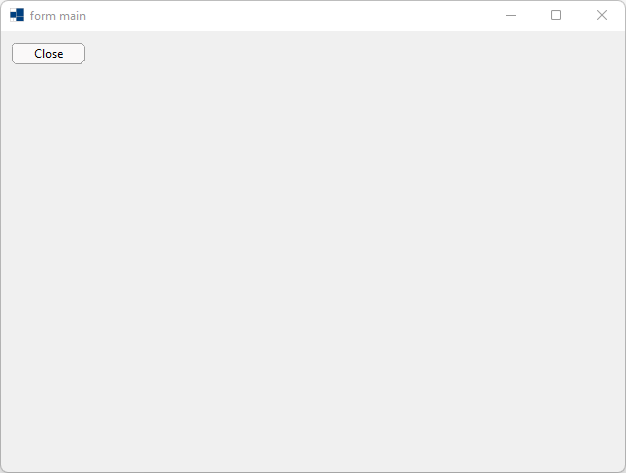
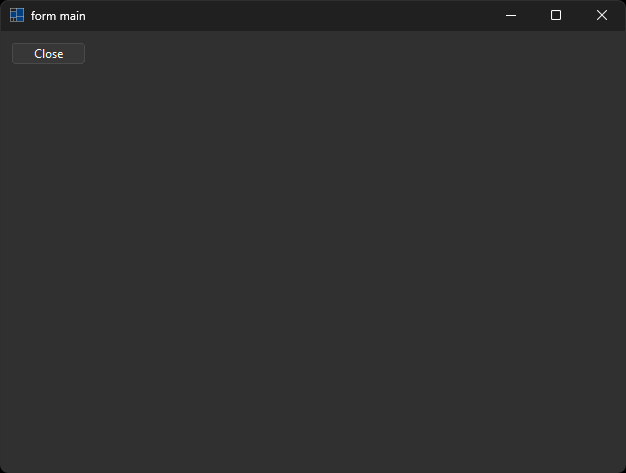
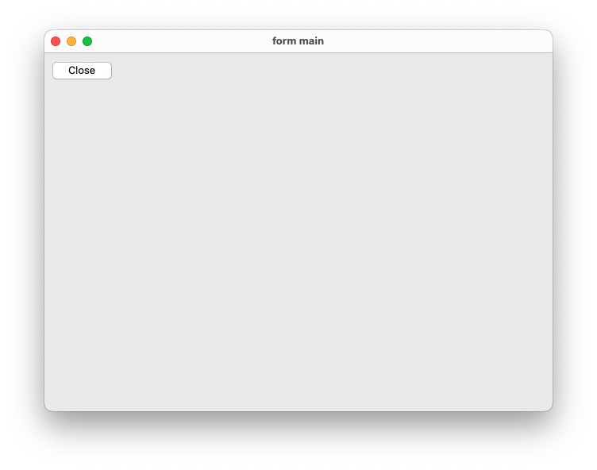
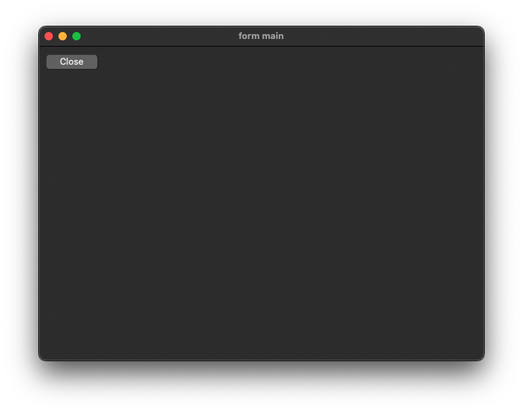
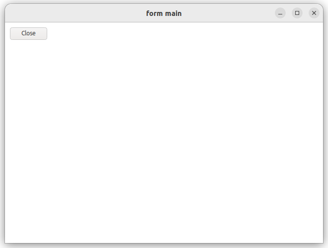
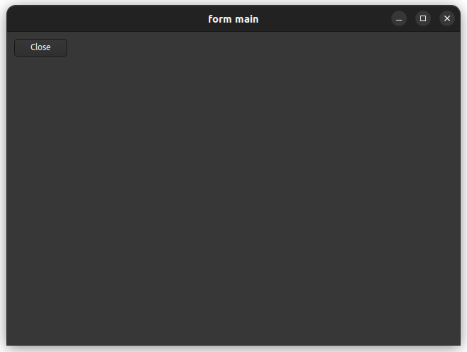

|
xtd
0.2.0
|
Loading...
Searching...
No Matches
form_and_main.cpp
demonstrates how to use startup_ keyword.
- Windows
- 

- macOS
- 

- Gnome
- 

#include <xtd/forms/application>
#include <xtd/forms/button>
#include <xtd/forms/form>
#include <xtd/forms/message_box>
#include <xtd/startup>
using namespace xtd;
using namespace xtd::forms;
namespace form_and_main_example {
public:
static auto main() {
application::run(form_main());
}
form_main() {
text("form main");
location({300, 200});
size({640, 480});
e.cancel(message_box::show("Are you sure you want exit?", "Close form", message_box_buttons::yes_no, message_box_icon::question) == dialog_result::no);
};
}
private:
};
}
startup_(form_and_main_example::form_main::main);
virtual const xtd::ustring & text() const noexcept
Gets the text associated with this control.
virtual drawing::point location() const noexcept
Gets the coordinates of the upper-left corner of the control relative to the upper-left corner of its...
event< control, event_handler > click
Occurs when the xtd::forms::control is clicked.
Definition control.h:1133
virtual std::optional< control_ref > parent() const noexcept
Gets the parent container of the control.
Provides data for the form_closing event.
Definition form_closing_event_args.h:20
Represents a window or dialog box that makes up an application's user interface.
Definition form.h:52
generic_event_handler<> event_handler
Represents the method that will handle an event that has no event data.
Definition event_handler.h:32
#define startup_(main_method)
Defines the entry point to be called when the application loads. Generally this is set either to the ...
Definition startup.h:162
The xtd::forms namespace contains classes for creating Windows-based applications that take full adva...
Definition about_box.h:13
The xtd namespace contains all fundamental classes to access Hardware, Os, System,...
Definition system_report.h:17
Generated on Fri Nov 17 2023 13:49:43 for xtd by Gammasoft. All rights reserved.